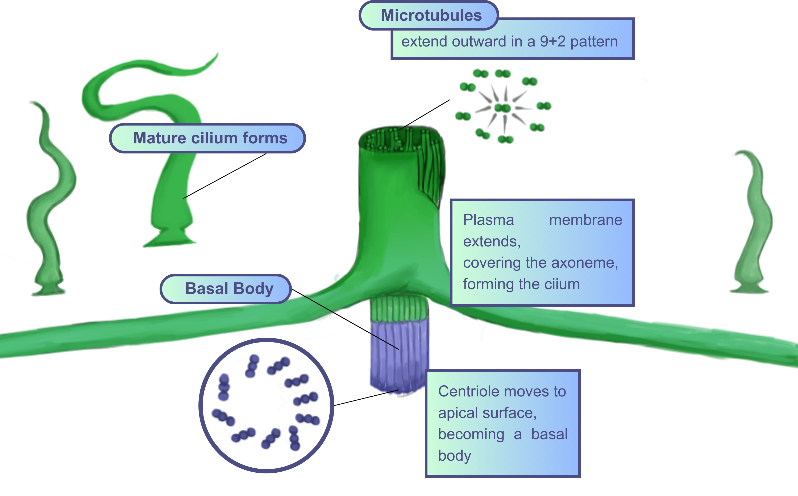
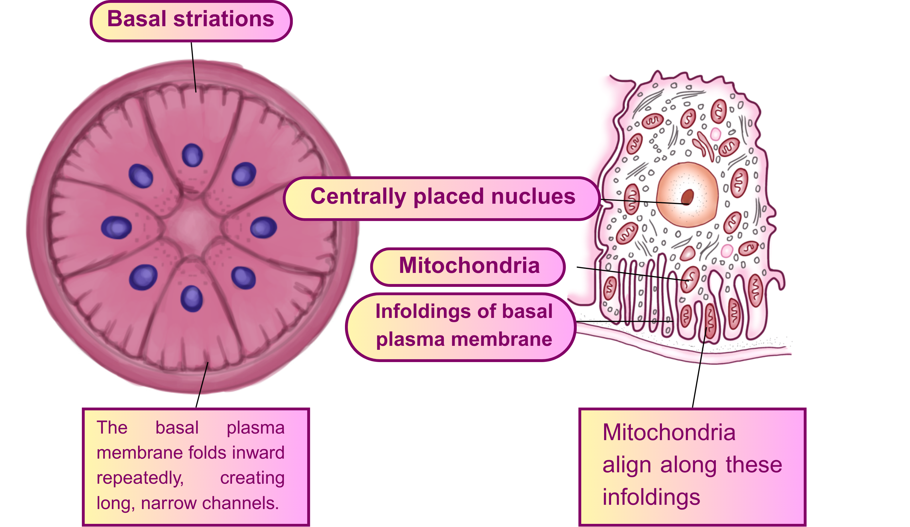

Apical Cell Modification
Changes at the tip of certain plant or fungal cells that enhance absorption, protection, or reproduction, depending on the cell type.

What can I say, except you're welcome?
Good day having you here! I'm thinking you want to learn about the Cell Modification. You came at the right place!
Let's learn the three types of Cell Modification along with their definitions and functions.
Cell Modification refers to the structural or functional changes that certain cells undergo to perform specialized tasks in the body. These changes allow cells to adapt and carry out roles beyond their basic form, such as providing protection, aiding in absorption, secretion, or sensation. Modified cells are essential for maintaining the efficiency and specialization of tissues and organs.
 This website is purely for educational purposes and is not subject to any agency or organization.
This website is purely for educational purposes and is not subject to any agency or organization.
Changes at the tip of certain plant or fungal cells that enhance absorption, protection, or reproduction, depending on the cell type.
Apical cell modification refers to specialized changes at the tip (apex) of certain plant or fungal cells that allow them to perform specific functions. These modifications can include elongation, thickening, or the formation of structures like root hairs, trichomes, or pollen tubes. Such adaptations enhance absorption, protection, or reproduction, depending on the cell’s role in the organism.
Function to anchor cells, provide structural support, and aid in material exchange with surrounding tissues.
Basal cell modifications are structural adaptations found at the base of certain cells, particularly in plants. These modifications help anchor cells to underlying tissues, provide mechanical support, and sometimes assist in the transport of substances between the cell and surrounding structures.
Function to connect adjacent cells, providing support, preventing leakage, and enabling cell-to-cell communication.
Lateral cell modifications are structural adaptations found on the sides of cells that help them tightly connect with neighboring cells. These modifications strengthen tissues by providing support, preventing leakage between cells, and allowing communication or transport of substances across adjacent cells.


This website scope to be used and explored as an educational material specifically in understanding the different modification of cells